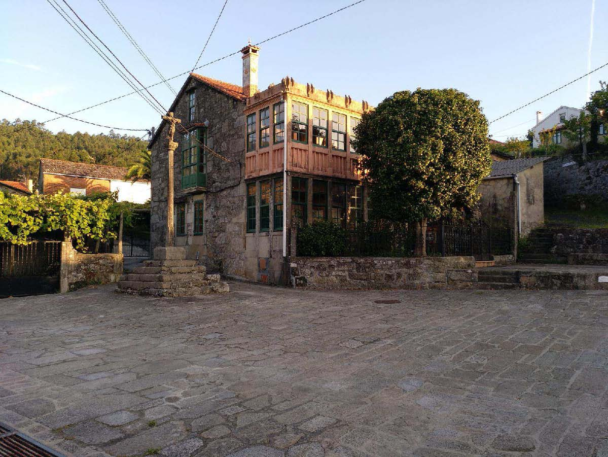
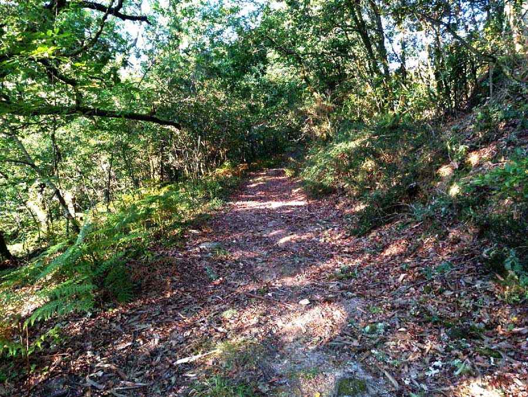
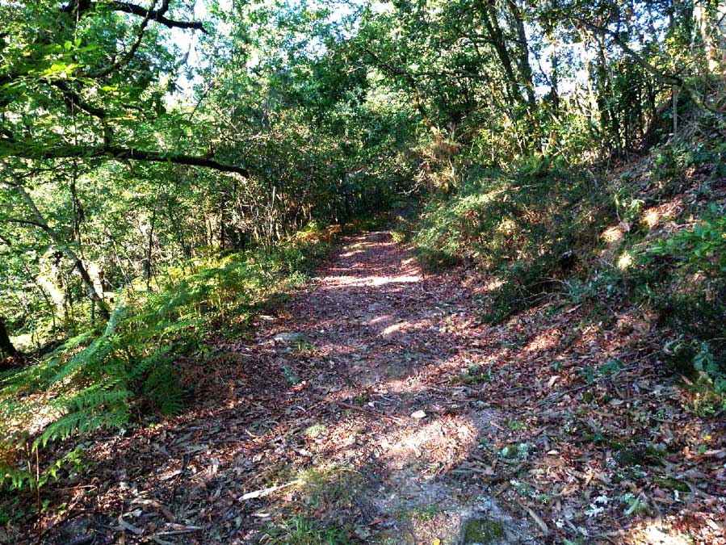
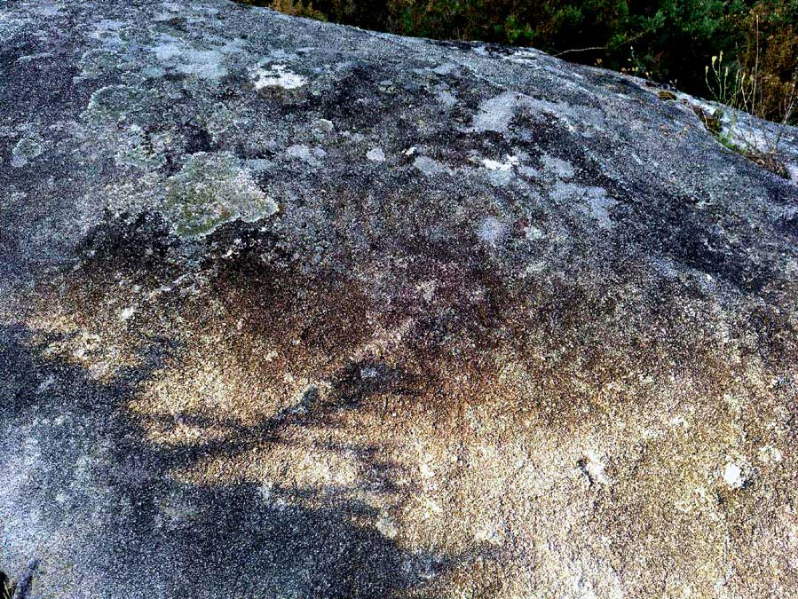
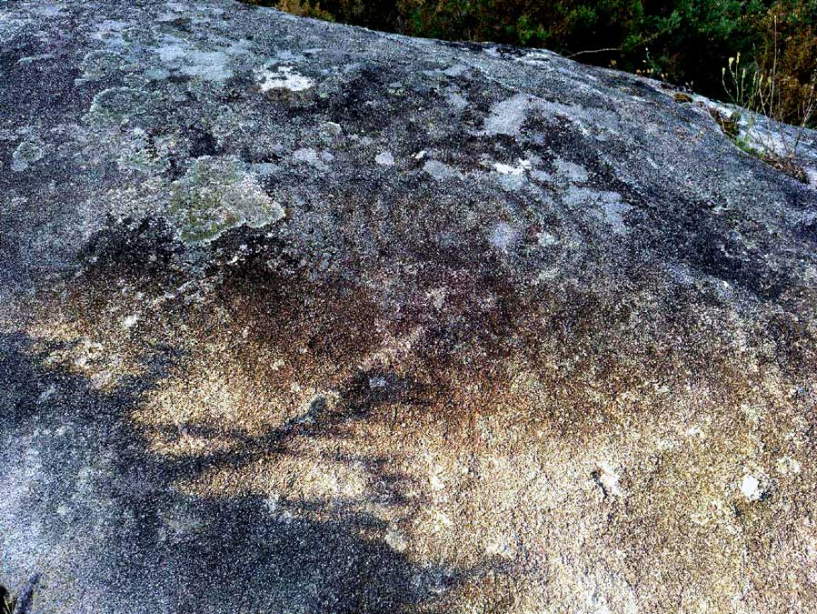
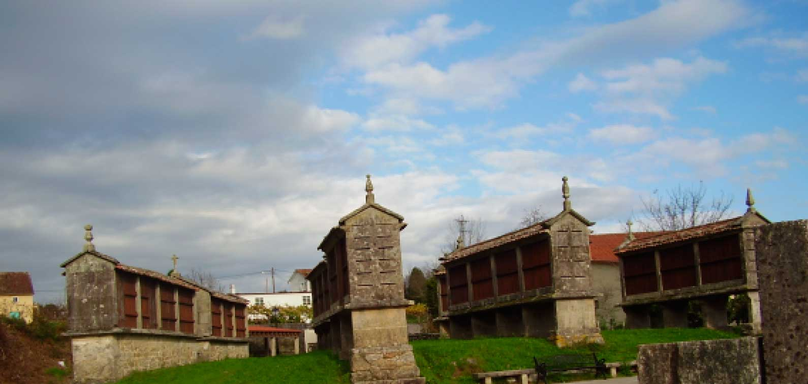

Ruta que percorre os espazoz literarios e,"Pensa Nao",obra de AnxoAngueira,escritorde Manselle,ao tempo que da a coñecerparte do patrimonio arqueoloxico do concello de Dodro. O relato comeza en 1935, a piques de estalar a Guerra Civil, en Sernanselle, aldea de Dodro Vello, na que emigrantes retornados/as crean unha moderna cooperativa de leite.
| Inicio | Manselle,Laiño |
| Fin | Horreos de Lavanderia,Imo |
| Distancia | 13,94 Km |
| Tipo | Lineal |
| Duración | 4 h 16 min |
| Dificultade | Media |

O Souto,Cruceiro e "Casa de Camoiras". Aldea Manselle en "Pensa Nao" toma o nome de Sernanselle
“O Souto de Sernanselle é unha das localizacións principais da novela. Nel acostuman reunirse os seus habitantes e de aí parten os soños de progreso dos protagonistas. ”

Carballos e castiñeiros debuxan a saída da aldea e o ascenso da ruta
“A obra conta a historia de amor de María e Amaro, grazas a eles coñecemos Sernanselle e os seus arredores. Ela traballa na cooperativa, ao tempo que participa na Sociedade Obreira e milita no PCE e el é un mozo retornado de Bos Aires.”
 



Pretóglifo da devesa dos mouchos(Idade do bronce)
“Localízase no lugar de Viachán, na aldea da Devesa. Está formado por círculos concéntricos e con coviñas no centro dos mesmos. Ten semellanzas cun labirinto tipo Mogor (Marín). ”
 
>

>
Cruceiro da cruz do Avelán
“Ten unha grosa columna, cunha fornela labrada na base.Descansa sobre tres chanzos e sostén unha capeliña coroada cunha cruz coa imaxe de Cristo. Fica nunha encrucillada entre varias aldeas, no “camiño sacramental” ás igrexas de San Xoán e de San Xiao de Laíño. Antigamente as comitivas fúnebres de Bustelo, A Devesa e Teaio paraban nel. O lugar máis preto é A Devesa, a 900 m.” “Cruceiro esmoleiro de capeliña. Data de 1672, é un dos máis antigos de Galicia. ”
Petróglifo do padronelo (Idade do bronce)
“Lousa case circular, duns 1,90 m de diámetro, con 6 coviñas de entre 2 e 3 cm de profundidade. Atópase a 500 m, escasos, do conxunto de Bouzabadín, na parroquia de San Xoán de Laíño, preto da aldea de Imo. ”


Castro de Bexo ou das murallas(Idade do ferro). En "Pensa Nao" castro das mouras.
“ Ocupa un primeiro recinto, de forma alongada, duns 120 m de longo e 75 m de ancho. Este espazo, de máis de 7.000 m2, enlaza con dous outeiros graníticos, localizados no NO e SE. O do NO é de maior tamaño, ten forma case circular e uns 25 m de diámetro. A elevación SE constitúe un promontorio de non máis de 20 m, abrupto e cuberto por derrube. A apariencia dos seus bloques, maiores que os do resto do poboado, e a escasa sedimentación sobre eles fai pensar no seu uso como atalaia medieval. Este promontorio domina o baixo Ulla, sendo visibles as Torres do Oeste (Catoira). No interior do poboado obsérvanse murallas e terrazas desfiguradas polo paso do tempo. Moitas lendas falan do lugar, unha relata o saqueo protagonizado polo mouro Almanzor e indica a existencia dun pasadizo entre o castro e as Torres do Oeste, cunha cadea de ouro ao longo para impedirlles o paso ás hostes sarracenas.” “Poboado castrexo da Idade de Ferro, sito a carón do monte Carboeiro, na aldea de Bexo, a unha altitude máx. de 272 m.”
 >
>
Eira dos Mouros - Castro de Bexo
“Pequena “croa” circular duns 1000 m2 que puido ser acrópole na Idade do Ferro e logo, na Idade Media, converterse en punto de observación da foz do río Ulla e da ría de Arousa.” “Conta a lenda que aquí non nacían nin toxos nin xestas debido ao sangue derramado polos mouros no combate co Apóstolo Santiago, do que se gardan as pegadas do seu cabalo nas pedras do lugar.”


Petróglifos de Bouzabandín(Idade do bronce)
“ Destaca a "Gran Peneira" cos seus círculos concéntricos e coviñas pero tamén hai escenas cruciformes e zoomórficas. Resulta de especial interese un gravado ecuestre pois nesa época aínda se comezaba a domesticar estes animais. Sorprende o “Gran Tetón”, pedra grande con forma de peito cuns círculos concéntricos. Hai pouco descubríuse a imaxe dun cervo en actitude de salto.” “Conxunto de varios gravados en seis penedos na aba do Monte Carboeiro, a 200m de Imo. ”


Pedra de Abanear
“Era lugar de xogos para a infancia, que movía a estrutura subíndose enriba e con moito esforzo. Na superficie superior presenta coviñas, posiblemente orixinadas pola auga, unha delas mesmo semella traballada para facilitar a súa caída. Outras pedras do lugar usábanse para agocharse.” “Situada nas Coviñas, ao SE da aldea de Imo, á beira do Camiño Real que une Padrón e Rianxo, descrito por Sarmiento. ”

Hórreos da Lavandeira, Imo
“ Son de diferentes épocas mais xorden no 1754, xunto coa construción da igrexa parroquial de San Xoán de Laíño, debido ao aumento do consumo e plantación de millo. O conxunto compleméntase cunha grande praza e cun lavadoiro. ” “Conxunto de 11 hórreos cos penais orientados cara ao sur para evitar a exposición aos vendavais nos laterais. Varian en número de claros e no tipo de soporte. ”
